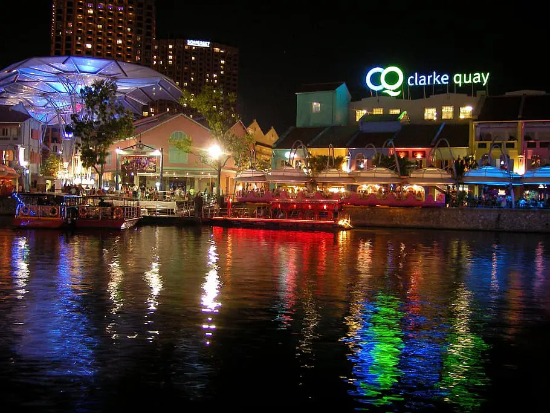

Singapura
Uma gigante em um pequeno espaço — moderna e dinâmica, a República de Singapura é uma cidade-estado e um dos Tigres Asiáticos. Localizada na extremidade sul da península malaia e com uma população de 5,4 milhões de habitantes, a cidade se reinventa constantemente e muitas vezes é exemplo para outras nações. São quatro idiomas oficiais, imigrantes de inúmeras nacionalidades e uma estrutura de fazer inveja.
A cidade é segura, super limpa e tem ares perfeccionistas, um pouco disso pelas das regras que permeiam seus moradores. Não estranhe se encontrar pela cidade placas com proibições diversas, entre elas a de mascar chiclete, comer durian em público, que é uma fruta com um cheiro pouco agradável, ou a obrigação de dar descarga em um banheiro público — sim, isso pode gerar uma multa! Enquanto para alguns as regras soam rígidas, para outros é exatamente por isso que a cidade consegue êxito em diversos aspectos.
Desenvolvida, Singapura é um lugar cheio de atrações turísticas, com criações inovadoras e muitas vezes grandiosas, o que faz com que alguns pontos turísticos sejam destaque não apenas na cidade, mas no mundo. O cenário do lugar é atraente por si só — Singa tem uma baía onde transitam embarcações, inclusive o River Boat, que é ótimo para um passeio no fim de tarde, tem edifícios espelhados, um calçadão delicioso para caminhar ao longo da baía e parques.

|

|
Localize-se!
Conheça alguns pontos turísticos
|
China Town |
Clarke Quay |

|
 |